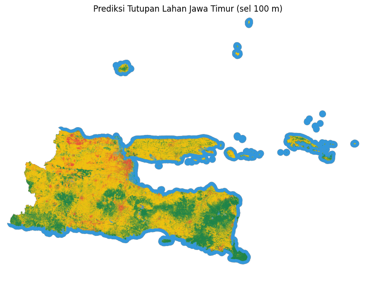

Klasifikasi Spasial Tutupan Lahan (LULC) Jawa Timur (Random Forest & Sentinel-2)#
Keterangan |
Informasi |
|---|---|
Nama |
Muhammad Fathul Iman Wahid |
NIM |
240411100180 |
Mata Kuliah |
Proyek Sains Data |
Topik |
Klasifikasi Tutupan Lahan (LULC) Jawa Timur berbasis Spasial |
Dokumentasi ini menyajikan alur lengkap (end-to-end pipeline) klasifikasi tutupan lahan (Land Use / Land Cover - LULC) di Provinsi Jawa Timur berbasis citra satelit multispektral Sentinel-2 Level-2A dan algoritma Random Forest. Model mengklasifikasikan lahan ke dalam 5 kelas (Bangunan, Pertanian, Air, Hutan, dan Mangrove) dan dievaluasi dengan validasi antar-wilayah, sehingga hasilnya menggambarkan kemampuan model pada lokasi yang belum pernah dilihat.
🌐 Aplikasi Web Interaktif (Streamlit): https://dashboard-lulc-jatim.streamlit.app/ Peta klasifikasi, filter kelas lahan, Confusion Matrix, dan grafik kinerja model dapat diakses langsung secara publik.
Siklus proyek disusun mengikuti metodologi CRISP-DM:
Business Understanding: latar belakang, tujuan, dan ruang lingkup pemetaan.
Data Understanding: definisi kelas, karakteristik citra Sentinel-2, indeks spektral, dan sampel ground truth.
Data Preprocessing: ekstraksi piksel, kompresi spasial menjadi poligon, fitur tekstur spasial, dan pengelompokan wilayah.
Modeling: pelatihan model Random Forest dan ekspor model.
Evaluation: validasi antar-wilayah, metrik per kelas, dan analisis kesalahan.
Deployment: dashboard interaktif berbasis Streamlit.
Kesimpulan: ringkasan hasil, keterbatasan, dan saran pengembangan.
Instalasi Library & Kebutuhan Lingkungan#
pip install openeo geopandas rasterio scikit-learn pandas numpy folium plotly streamlit joblib
1. Business Understanding (Pemahaman Bisnis)#
1.1. Latar Belakang#
Pemetaan tutupan lahan sangat penting untuk pemantauan lahan pertanian, perencanaan tata ruang, ketahanan pangan, dan konservasi lingkungan. Jawa Timur memiliki bentang alam yang beragam: lahan pertanian yang luas, kawasan terbangun perkotaan, hutan pegunungan, perairan darat dan laut, serta ekosistem mangrove di sepanjang pesisir.
Interpretasi citra satelit secara manual memerlukan waktu dan tenaga yang besar serta rentan terhadap subjektivitas penafsir. Selain itu, wilayah yang luas membuat survei lapangan sulit dilakukan secara berkala. Pendekatan machine learning berbasis citra satelit multispektral dapat mengotomatiskan proses ini dan direplikasi setiap kali citra terbaru tersedia.
1.2. Tujuan Proyek#
Membangun model klasifikasi tutupan lahan Jawa Timur ke dalam 5 kelas: Bangunan, Pertanian, Air, Hutan, dan Mangrove.
Menerapkan algoritma Random Forest pada fitur tekstur spasial yang diturunkan dari citra Sentinel-2.
Mengevaluasi model dengan validasi antar-wilayah agar hasilnya tidak terlalu optimistis akibat kebocoran data spasial.
Menyajikan hasil klasifikasi dalam dashboard interaktif (peta satelit dengan filter kelas lahan dan grafik kinerja model) yang dapat diakses publik.
1.3. Ruang Lingkup dan Batasan#
Aspek |
Keterangan |
|---|---|
Wilayah |
Lokasi sampel tersebar di berbagai wilayah Provinsi Jawa Timur |
Sumber citra |
Sentinel-2 Level-2A (Bottom-of-Atmosphere Reflectance) |
Jumlah kelas |
5 kelas tutupan lahan |
Unit analisis |
Poligon sampel (hasil agregasi dari piksel di dalamnya) |
Algoritma |
Random Forest |
Output |
Model |
2. Data Understanding (Pengumpulan & Pemahaman Data)#
2.1. Definisi 5 Kelas Tutupan Lahan#
No |
Kelas |
Label |
Definisi Objek |
Karakteristik Spektral Utama |
|---|---|---|---|---|
1 |
Bangunan |
|
Permukiman, gedung, jalan aspal/beton, dan fasilitas industri |
Pantulan tinggi pada SWIR (B11) dan Red (B04); NDBI tinggi; NDVI rendah |
2 |
Pertanian |
|
Sawah dan lahan budidaya (termasuk fase genangan, tanam, dan bera) |
Berubah mengikuti fase tanam; NDVI sedang hingga tinggi saat fase hijau |
3 |
Air |
|
Laut, danau, waduk, dan badan air lainnya |
Penyerapan kuat pada NIR dan SWIR; NDWI dan MNDWI positif; NDVI negatif |
4 |
Hutan |
|
Vegetasi berkanopi rapat di daratan, termasuk hutan pegunungan |
Pantulan NIR tinggi dan serapan Red kuat; NDVI tinggi |
5 |
Mangrove |
|
Hutan bakau di muara dan pantai berlumpur pasang surut |
Sinyal vegetasi hijau dengan pengaruh substrat basah (SWIR relatif lebih rendah) |
2.2. Citra Sentinel-2 Level-2A#
Citra bersumber dari sensor Multispectral Instrument (MSI) pada satelit Sentinel-2 dalam produk Level-2A (koreksi atmosfer Bottom-of-Atmosphere), diakses melalui platform openEO pada Copernicus Data Space Ecosystem (CDSE).
Band |
Nama |
Panjang Gelombang |
Resolusi |
Kegunaan |
|---|---|---|---|---|
B02 |
Blue |
490 nm |
10 m |
Deteksi badan air dan hamburan atmosfer |
B03 |
Green |
560 nm |
10 m |
Puncak pantulan klorofil dan sedimen perairan |
B04 |
Red |
665 nm |
10 m |
Serapan klorofil; pembeda vegetasi dengan tanah dan bangunan |
B08 |
Near Infrared (NIR) |
842 nm |
10 m |
Pantulan struktur daun; diserap hampir total oleh air |
B11 |
Short-Wave Infrared (SWIR) |
1610 nm |
20 m |
Kelembapan tanah dan vegetasi serta material beton/atap |
2.3. Indeks Spektral#
Empat indeks spektral dihitung untuk memperkuat keterpisahan antar-kelas (konstanta \(\epsilon\) kecil mencegah pembagian dengan nol):
Normalized Difference Vegetation Index (NDVI), mengukur kerapatan vegetasi hijau:
Normalized Difference Water Index (NDWI), mengisolasi badan air terbuka:
Modified NDWI (MNDWI), mendeteksi air dengan SWIR dan meredam gangguan area terbangun:
Normalized Difference Built-up Index (NDBI), menonjolkan kawasan terbangun:
2.4. Dataset Ground Truth#
Sampel ground truth berupa poligon yang didigitasi di atas citra satelit resolusi tinggi dan disimpan dalam format GeoJSON (EPSG:4326). Setiap poligon memiliki label kelas, dan sampel sengaja disebar di berbagai wilayah Jawa Timur agar model tidak hanya mengenali ciri satu lokasi.
Kelas |
Jumlah Poligon |
|---|---|
Bangunan |
73 |
Pertanian |
143 |
Air |
75 |
Hutan |
124 |
Mangrove |
75 |
Total |
490 |
2.5. Akuisisi Citra via openEO#
Citra diunduh melalui openEO dengan koleksi SENTINEL2_L2A. Karena sampel tersebar luas, pengunduhan dilakukan per wilayah (satu bounding box untuk setiap kelompok poligon yang berdekatan) agar berkas tetap ringan dan tidak melampaui batas pemrosesan. Citra dikomposit dengan median temporal untuk meminimalkan pengaruh awan.
Parameter |
Nilai |
|---|---|
Koleksi |
|
Periode citra |
1 September 2026 – 30 September 2026 |
Batas tutupan awan |
None |
Resolusi |
10 m |
Format keluaran |
GeoTIFF ( |
3. Data Preprocessing (Pra-pemrosesan Data)#
3.1. Ekstraksi Piksel dari Poligon#
Citra GeoTIFF dipotong menggunakan bentuk setiap poligon sampel (rasterio.mask), dan seluruh piksel di dalamnya diambil sebagai data. Piksel kosong (bernilai 0) dibuang. Proses ini menghasilkan 3.409.327 piksel berlabel.
3.2. Kompresi Spasial (Piksel → Poligon)#
Piksel yang bertetangga dalam satu poligon memiliki nilai spektral yang sangat mirip (autokorelasi spasial). Jika piksel-piksel ini dipakai langsung dan dibagi acak, piksel dari poligon yang sama dapat masuk ke data latih dan data uji sekaligus sehingga akurasi menjadi terlalu optimistis. Karena itu seluruh piksel dalam satu poligon dipadatkan menjadi satu sampel.
Tahap |
Jumlah Data |
|---|---|
Piksel hasil ekstraksi |
3.409.327 piksel |
Setelah kompresi spasial |
490 poligon |
Kompresi ini juga mencegah poligon berukuran besar mendominasi proses pelatihan.
3.3. Fitur Tekstur Spasial#
Setiap poligon dideskripsikan oleh 18 fitur, yaitu rata-rata (_mean) dan simpangan baku (_std) dari sembilan lapisan: b02, b03, b04, b08, b11, ndvi, ndwi, mndwi, dan ndbi, yang dihitung dari seluruh piksel di dalam poligon. Rata-rata menangkap nilai khas objek, sedangkan simpangan baku menangkap keragaman (tekstur) di dalamnya, sehingga 9 lapisan menghasilkan 18 fitur.
Lapisan |
Fitur rata-rata |
Fitur simpangan baku |
|---|---|---|
B02 (Blue) |
|
|
B03 (Green) |
|
|
B04 (Red) |
|
|
B08 (NIR) |
|
|
B11 (SWIR) |
|
|
NDVI |
|
|
NDWI |
|
|
MNDWI |
|
|
NDBI |
|
|
Rata-rata menangkap nilai khas suatu objek, sedangkan simpangan baku menangkap keragamannya (tekstur). Misalnya air relatif seragam (simpangan baku kecil), sedangkan permukiman bercampur atap, jalan, dan pohon (simpangan baku besar). Poligon yang hanya berisi satu piksel diberi simpangan baku 0.
3.4. Pengelompokan Wilayah untuk Validasi#
Poligon dikelompokkan menjadi wilayah menggunakan algoritma DBSCAN pada titik pusat poligon (dalam sistem koordinat meter). Poligon yang berdekatan masuk ke wilayah yang sama dan selalu berada pada fold yang sama saat validasi.
Parameter |
Nilai |
|---|---|
Algoritma |
DBSCAN |
Radius ( |
10.0 km |
Jumlah wilayah |
29 |
Radius dipilih secara struktural: cukup besar untuk memisahkan poligon yang bertetangga, tetapi tidak sampai menyatukan sebagian besar sampel menjadi satu wilayah.
4. Modeling (Pemodelan Machine Learning)#
4.1. Algoritma Random Forest#
Random Forest adalah algoritma ensemble yang membangun banyak pohon keputusan dari subset data dan subset fitur yang berbeda, lalu menentukan kelas akhir melalui pemungutan suara mayoritas. Algoritma ini dipilih karena:
Tidak memerlukan standardisasi fitur, sehingga band mentah dan indeks dapat dipakai bersama.
Tahan terhadap outlier dan overfitting dibanding satu pohon keputusan, cocok untuk data berukuran menengah (418 poligon).
Menangani hubungan non-linear antar-fitur spektral dan tekstur.
Menyediakan feature importance untuk menafsirkan fitur yang paling berperan.
4.2. Konfigurasi Model#
Hyperparameter |
Nilai |
|---|---|
|
200 |
|
2 |
|
balanced |
|
42 |
4.3. Ekspor Model#
Setelah evaluasi, model final dilatih ulang pada seluruh data poligon dan diekspor sebagai berkas biner model_LULC_jatim_texture.joblib agar dapat dimuat kembali oleh aplikasi Streamlit tanpa pelatihan ulang.
5. Evaluation (Evaluasi Model & Hasil Klasifikasi)#
5.1. Skema Validasi Antar-Wilayah#
Evaluasi memakai validasi silang berbasis wilayah: seluruh poligon dari satu wilayah selalu berada pada fold yang sama, sehingga model diuji pada lokasi yang belum pernah dilihat saat pelatihan. Skema ini lebih ketat daripada pembagian acak karena autokorelasi spasial tidak lagi “bocor” dari data latih ke data uji.
5.2. Hasil Evaluasi#
Akurasi Validasi Wilayah: 73,67% (GroupKFold 5-fold berbasis wilayah, 490 poligon dari 29 wilayah)
Kelas |
Precision |
Recall |
F1-Score |
Kategori |
Keterangan |
|---|---|---|---|---|---|
Bangunan |
0,92 |
0,89 |
0,90 |
Sangat baik |
Ciri spektral khas (SWIR tinggi, NDBI tinggi) |
Air |
0,91 |
0,83 |
0,87 |
Sangat baik |
Penyerapan NIR dan SWIR membedakannya dari daratan |
Hutan |
0,70 |
0,76 |
0,73 |
Baik |
Saling tertukar dengan Pertanian |
Pertanian |
0,60 |
0,72 |
0,66 |
Sedang |
Membaik setelah sampel bertambah, tetapi masih tertukar dengan Hutan |
Mangrove |
0,82 |
0,49 |
0,62 |
Sedang |
Precision tinggi, tetapi separuh poligon mangrove tidak terdeteksi |
Kategori F1: ≥ 0,85 sangat baik, 0,70-0,84 baik, 0,55-0,69 sedang, < 0,55 rendah.
5.3. Confusion Matrix#
Aktual \ Prediksi |
Bangunan |
Pertanian |
Air |
Hutan |
Mangrove |
Total Aktual |
|---|---|---|---|---|---|---|
Bangunan |
65 |
7 |
0 |
1 |
0 |
73 |
Pertanian |
6 |
103 |
6 |
25 |
3 |
143 |
Air |
0 |
10 |
62 |
3 |
0 |
75 |
Hutan |
0 |
25 |
0 |
94 |
5 |
124 |
Mangrove |
0 |
26 |
0 |
12 |
37 |
75 |
Matriks yang sama ditampilkan secara interaktif pada dashboard Streamlit.
5.4. Analisis Hasil#
Bangunan dan Air memiliki kinerja tertinggi (F1 ≥ 0,87) karena memiliki ciri spektral yang sangat berbeda dari kelas lain.
Pertanian dan Hutan paling sering tertukar: 25 poligon Pertanian diprediksi Hutan dan 25 poligon Hutan diprediksi Pertanian. Keduanya sama-sama vegetasi hijau sehingga ciri spektralnya berdekatan pada satu komposit waktu. Dugaan ini perlu diuji dengan citra multi-waktu.
Pertanian (F1 0,66) membaik dibanding iterasi sebelumnya (0,47) setelah jumlah sampelnya bertambah dari 74 menjadi 143 poligon dengan variasi kondisi lahan (genangan, bera, hijau, dan tegalan).
Mangrove (F1 0,62, recall 0,49) adalah kelas yang paling menurun. Sebanyak 26 poligon mangrove diprediksi Pertanian dan 12 diprediksi Hutan. Penyebab yang paling mungkin adalah sebaran sampel: 54 dari 75 poligon mangrove berada di satu wilayah (Surabaya-Sidoarjo). Ketika wilayah itu menjadi data uji, model hanya belajar dari 21 poligon mangrove lain dan 36 dari 54 poligon tersebut salah diprediksi. Pada dua wilayah mangrove lainnya, 19 dari 21 poligon (sekitar 90%) diprediksi benar. Jadi F1 mangrove bersifat pesimistis untuk Surabaya-Sidoarjo dan belum menggambarkan kinerja pada pesisir lain.
Hasil dilaporkan dari validasi antar-wilayah sehingga cenderung lebih rendah dibanding evaluasi acak per piksel, tetapi lebih mencerminkan kinerja pada lokasi baru.
5.5. Riwayat Iterasi#
Iterasi |
Jumlah Poligon |
Fitur |
Hasil Validasi Wilayah |
|---|---|---|---|
Awal |
366 |
9 fitur spektral (rata-rata per poligon) |
64,92% (rata-rata per fold), 68% (gabungan) |
Iterasi 2 |
418 |
18 fitur tekstur spasial |
75,84% |
Iterasi 3 (Final) |
490 |
18 fitur tekstur spasial |
73,67% |
Awal: akurasi tidak stabil. Satu fold hanya 31,6% karena hampir seluruh isinya poligon hutan, dan sampel hutan terkumpul di sedikit wilayah.
Iterasi 2: sampel hutan ditambah (69 menjadi 121 poligon) dan fitur diperkaya dengan simpangan baku.
Iterasi 3: ditambah 72 poligon (Pertanian 74 menjadi 143 dan Hutan 121 menjadi 124) untuk memperkaya variasi kelas yang paling lemah. Pertanian membaik (F1 0,47 menjadi 0,66), sedangkan Mangrove menurun (0,77 menjadi 0,62) akibat sebaran sampel yang terpusat di satu wilayah (poin 4 pada 5.4).
Ketiga hasil tidak sepenuhnya sebanding karena jumlah sampel dan komposisi fold berbeda pada tiap iterasi. Iterasi 3 dipilih sebagai model final karena memiliki sampel terbanyak dan cakupan variasi kelas yang lebih luas, walaupun akurasi totalnya sedikit di bawah iterasi 2.
6. Prediksi Tutupan Lahan Jawa Timur#
Setelah model divalidasi, model diterapkan ke seluruh Provinsi Jawa Timur untuk menghasilkan peta tutupan lahan beserta luas tiap kelas.
6.1. Skema Prediksi Berbasis Sel#
Model dilatih pada statistik per poligon (rata-rata dan simpangan baku), sehingga citra tidak dapat diprediksi piksel demi piksel. Citra dibagi menjadi sel 100 × 100 m (10 × 10 piksel Sentinel-2), dan fitur setiap sel dihitung dengan cara yang sama seperti saat pelatihan. Ukuran 100 m dipilih sebagai kompromi antara jumlah piksel yang cukup untuk menghitung simpangan baku dan detail spasial peta.
6.2. Tahapan Proses#
Seluruh Jawa Timur (sekitar 478 juta piksel pada resolusi 10 m) terlalu besar untuk diproses sekaligus, sehingga wilayah dipecah menjadi kotak-kotak dan perhitungan fitur dilakukan langsung di server openEO.
Tahap |
Proses |
|---|---|
1 |
Membaca batas wilayah Jawa Timur (GeoJSON) yang sudah diberi margin pesisir agar perairan dekat pantai ikut terpetakan |
2 |
Memotong area menjadi 126 kotak berukuran 30 × 30 km; kotak yang berada di luar area dibuang |
3 |
Per kotak, openEO menghitung indeks (NDVI, NDWI, MNDWI, NDBI) pada setiap piksel, lalu merata-ratakannya ke sel 100 m ( |
4 |
Menurunkan simpangan baku dari rata-rata dan rata-rata kuadrat, lalu menyusun 18 fitur dengan urutan identik dengan pelatihan |
5 |
Memprediksi kelas setiap sel dengan model; sel tanpa data diberi nilai kosong |
6 |
Menggabungkan seluruh kotak menjadi satu peta ( |
7 |
Menghitung luas tiap kelas (1 sel = 100 × 100 m = 1 hektare) |
Parameter citra sama dengan saat pelatihan: koleksi SENTINEL2_L2A, lima band (B02, B03, B04, B08, B11), median temporal 1-30 September 2026, tanpa filter awan.
Simpangan baku sel dihitung dari rata-rata (\(\bar{x}\)) dan rata-rata kuadrat (\(\overline{x^2}\)) dengan \(n = 100\) piksel per sel:
6.3. Hasil Prediksi#

Kelas |
Luas (ha) |
Persen (%) |
|---|---|---|
Bangunan |
300.679 |
4,8 |
Pertanian |
2.926.022 |
46,5 |
Air |
1.536.676 |
24,4 |
Hutan |
1.485.433 |
23,6 |
Mangrove |
41.631 |
0,7 |
Total |
6.290.441 |
100 |
Luas total area terpetakan adalah 6.290.441 hektare (sekitar 62.904 km²), termasuk margin perairan pesisir. Persentase dihitung terhadap total area tersebut, sehingga kelas Air (24,4%) sudah mencakup laut pada margin pesisir. Sel tanpa data di dalam batas wilayah sebesar 0,00%.
Pertanian merupakan kelas terluas (46,5%), diikuti Air (24,4%) dan Hutan (23,6%), sedangkan Bangunan (4,8%) dan Mangrove (0,7%) menempati area yang jauh lebih kecil. Luas tiap kelas dihitung dari jumlah sel hasil prediksi (1 sel = 100 × 100 m = 1 hektare), sehingga merupakan perkiraan yang mengikuti akurasi model (73,67% pada validasi lintas wilayah), bukan hasil pengukuran langsung.
6.4. Keterbatasan Prediksi#
Sel campuran. Satu sel 100 × 100 m hanya dapat diberi satu label, padahal sel di perbatasan dua jenis lahan (misalnya mangrove dengan sawah, atau permukiman padat bervegetasi) berisi campuran. Pengamatan visual pada peta menunjukkan sebagian sel semacam ini diberi label Pertanian.
Tanpa acuan penuh. Tidak ada data acuan untuk seluruh wilayah, sehingga akurasi peta diperkirakan mengikuti hasil validasi lintas wilayah (73,67%) dan dapat lebih rendah pada wilayah dengan campuran lahan yang padat.
Hanya 5 kelas. Objek lain (misalnya tambak, lahan terbuka, atau area yang tertutup awan) tetap dipaksa masuk ke salah satu dari lima kelas.
Satu komposit waktu. Komposit median September (musim kemarau) tanpa filter awan belum menangkap perubahan fase tanam.
7. Deployment (Penyebaran Hasil via Streamlit)#
7.1. Alur dari Data ke Dashboard#
Tahap |
Proses |
|---|---|
Ambil |
Citra Sentinel-2 diambil dari Copernicus Data Space melalui openEO |
Proses |
Indeks dan 18 fitur (rata-rata dan simpangan baku) dihitung per sel 100 m |
Klasifikasi |
Model Random Forest memprediksi kelas tiap sel, lalu hasilnya digabung menjadi satu peta |
Informasi |
Peta, luas tiap kelas, dan metrik evaluasi ditampilkan pada dashboard |
Tahap ambil, proses, dan klasifikasi dijalankan di Google Colab. Hasilnya diekspor menjadi berkas ringan, sehingga dashboard hanya perlu menampilkan tanpa menghitung ulang.
7.2. Arsitektur Aplikasi#
Hasil dipublikasikan sebagai Single-Page Application (SPA) interaktif berbasis Streamlit. Seluruh konten berada dalam satu halaman sehingga pengguna dapat melihat peta, luas, filter, dan grafik tanpa berpindah halaman.
Komponen |
Keterangan |
|---|---|
Peta |
Folium (Leaflet) dengan basemap Google Satellite dan OpenStreetMap |
Hasil prediksi |
Lima gambar PNG transparan (satu per kelas) yang ditumpuk di atas citra satelit |
Layer sampel |
Poligon sampel hasil digitasi sebagai layer tambahan (awalnya tidak dicentang) |
Filter kelas |
Filter native melalui |
Informasi luas |
Kartu luas (hektare dan persen) untuk tiap kelas |
Grafik |
Plotly: Confusion Matrix dan bar chart horizontal Precision, Recall, F1-Score |
Sumber data |
Folder |
7.3. Fitur Interaktif Peta#
Basemap satelit memungkinkan hasil klasifikasi dibandingkan langsung dengan kenampakan lahan sebenarnya.
Filter per kelas memudahkan pengguna menelusuri satu jenis tutupan lahan.
Warna per kelas diambil dari satu sumber yang sama sehingga konsisten pada peta, legenda, dan grafik.
Metrik dibaca dari berkas hasil evaluasi, sehingga angka pada dashboard selalu sama dengan hasil model.
Kelas |
Warna |
|---|---|
Bangunan |
Merah |
Pertanian |
Kuning |
Air |
Biru |
Hutan |
Hijau tua |
Mangrove |
Tosca |
7.4. Akses Publik#
Aplikasi dapat diakses secara publik melalui tautan berikut:
8. Kesimpulan#
Hasil utama. Model Random Forest dengan 18 fitur tekstur spasial mencapai akurasi validasi wilayah 73,67% untuk 5 kelas tutupan lahan di Jawa Timur (490 poligon dari 29 wilayah). Angka ini diperoleh dari pengujian pada lokasi yang belum pernah dilihat model.
Kinerja per kelas. Bangunan (F1 0,90) dan Air (0,87) terklasifikasi sangat baik, Hutan (0,73) baik, Pertanian (0,66) membaik dibanding iterasi sebelumnya (0,47), sedangkan Mangrove (0,62, recall 0,49) masih perlu ditingkatkan karena sampelnya terpusat pada sedikit wilayah.
Peta seluruh Jawa Timur. Model berhasil diterapkan pada 126 kotak citra dan digabung menjadi satu peta tutupan lahan beserta luas tiap kelas (Bagian 6).
Pentingnya validasi spasial. Kompresi piksel menjadi poligon dan validasi antar-wilayah mencegah kebocoran data spasial. Analisis per fold juga terbukti membantu menemukan ketimpangan sebaran sampel, termasuk pada kelas Hutan dan Mangrove.
Deployment. Hasil dipublikasikan dalam dashboard Streamlit interaktif yang menampilkan peta prediksi, luas tiap kelas, dan metrik evaluasi.
Keterbatasan#
Sampel mangrove terkonsentrasi di tiga wilayah, sehingga F1 mangrove (0,62) pesimistis untuk Surabaya-Sidoarjo dan belum teruji pada pesisir lain.
Prediksi per sel 100 × 100 m membuat sel di perbatasan dua jenis lahan hanya mendapat satu label.
Satu komposit waktu (September) belum menangkap perubahan fase tanam pada lahan pertanian.
Label sampel berasal dari interpretasi visual tanpa verifikasi lapangan, dan peta tidak memiliki data acuan penuh.
Saran Pengembangan#
Menambah sampel mangrove dari pesisir lain (pesisir utara, Madura, tapal kuda, dan Banyuwangi).
Menambah sampel permukiman dan pertanian yang bercampur dengan vegetasi untuk mengurangi kekeliruan pada sel campuran.
Menggunakan citra multi-waktu (misalnya musim hujan dan kemarau) serta data elevasi (DEM) sebagai fitur tambahan.
Memvalidasi peta dengan titik acak independen yang dilabeli dari citra resolusi tinggi atau survei lapangan.
Menguji ukuran sel yang lebih kecil dan membandingkan Random Forest dengan algoritma lain pada skema validasi yang sama.